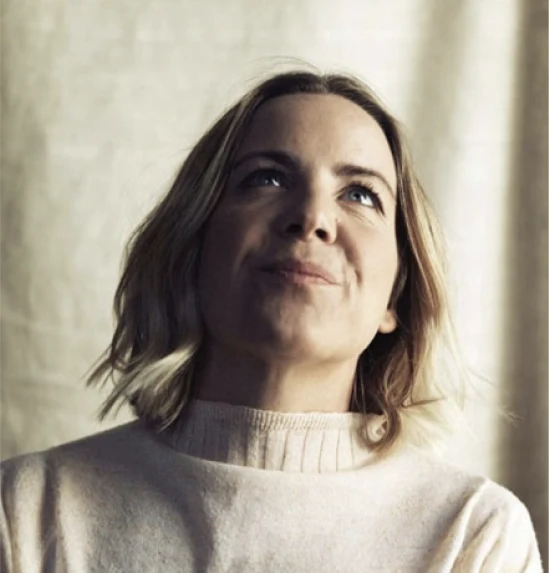

Creative Director, Marnine LaneUSA, 2026 (3mths) Full-Time.
Leading 6 accounts from CPG branding to marketing roll-outs.

With over 18 years of industry experience, across Australia, UK, Europe and USA, I’ve had the pleasure of working with some of the world’s largest brands, most ambitious founders and talented creatives in a variety of business stages and categories. Developing or amplifying their essence across all facets of their brand.
Leading 6 accounts from CPG branding to marketing roll-outs.
Leading the rebrand and launch into Whole Foods Market nationwide. #1 top selling privately owned deodorant brand in WFM.
Sustainable Suncare.
Launching 2028
Leading the new brand photography art direction for J&J IM.
Clients
Selected agencies
Titles
Most of my recent work has been with founder-led brands, often the founder’s first real brand build. I work closely with them from the first workshop and push them beyond what they first thought was possible, explaining the thinking behind each decision so they can commit with confidence. Just as at home in the room with corporate leadership.
Developing distinct creative territories, usually three, built on brand strategy grounded in research and insight. At least one goes braver than the client expects. Years of pitching new business and presenting creative work to senior stakeholders.
Leading my own projects while guiding designers and design directors. Clear direction, honest feedback and room to push the work past the brief. Budgets, timelines and deliverables managed so the creative ambition holds up commercially.
Audits, competitor research, customer research and behavior. Insight turned into a position the team can design from.
Ideation grounded in brand strategy, with hands-on design across every visual asset. Packaging built for the shelf, including Cleo+Coco’s national launch into Whole Foods Market.
Hands-on digital and print. Packaging, demo stands, ecom wireframing, UX and dev management, content planning, art direction, signage and wayfinding, through production to implementation.